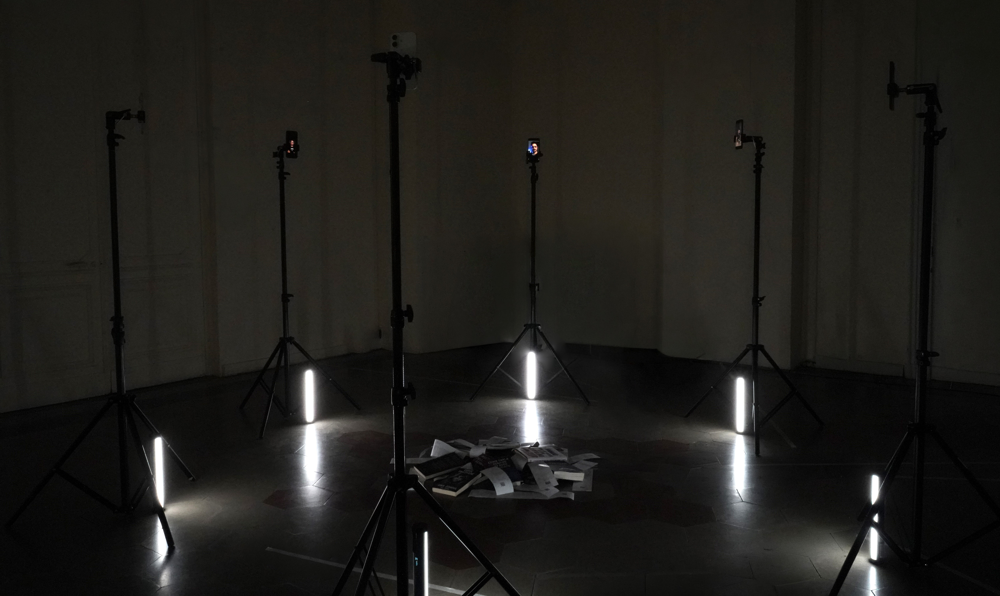
Negli ultimi anni i social media sono diventati uno dei principali luoghi in cui vengono costruiti e diffusi modelli di mascolinità. All'interno della manosfera, termine generico per una rete di comunità online, antifemministe e maschiliste supremate. I Pick-Up Artists (PUA), noti anche come "comunità di seduzione", sono una sottocultura centrale all'interno di questo ecosistema, che si concentrano sulle tecniche di apprendimento per sedurre e controllare le donne e creator promettono di insegnare agli uomini come ottenere successo, rispetto, attrazione e sicurezza personale attraverso strategie, tecniche e percorsi di miglioramento.
La ricerca alla base del progetto ha analizzato 30 profili appartenenti a questo ecosistema, esaminando siti web, corsi, consulenze e contenuti social. Per ciascun profilo sono stati raccolti e studiati reel, trascrizioni, call to action, pattern linguistici, prodotti commercializzati e strategie di monetizzazione, con l'obiettivo di individuare le narrazioni ricorrenti che attraversano questi contenuti.
L'analisi ha evidenziato la presenza di un linguaggio estremamente ripetitivo, costruito attorno a concetti come valore, status, controllo, attrazione e performance. In questo sistema la mascolinità viene presentata come un processo di ottimizzazione continua, mentre le donne vengono frequentemente rappresentate come indicatori di successo, obiettivi da raggiungere o conferme del proprio valore.
L'installazione restituisce questi risultati attraverso sei telefoni che incarnano le principali narrazioni emerse dall'indagine: manipolazione, successo, rispetto, approccio, attrazione e resilienza. Riunendo nello stesso spazio voci, slogan e frammenti di reel, The Alpha Factory trasforma il feed in un ambiente fisico, rendendo visibile il processo attraverso cui desideri, relazioni e identità vengono standardizzati, riprodotti e infine trasformati in mercato.
Definizione dell’oggetto di analisi e perimetro della ricerca
L’oggetto di analisi del progetto è l’ecosistema social dei Pick-Up Artists, identificati anche come dating coach o creator legati alla “comunità di seduzione”. La ricerca si concentra su quei profili che producono contenuti rivolti principalmente a un pubblico maschile, promettendo tecniche di attrazione, strategie relazionali, percorsi di miglioramento personale, consulenze e corsi per ottenere successo con le donne.
Il progetto parte da una domanda critica: i Pick-Up Artists possono essere considerati un nodo intermedio di un problema sistemico più ampio che riguarda l’oggettificazione della donna, trasmesso e amplificato attraverso le piattaforme digitali social? Nelle slide di progetto, questo tema viene collegato alla standardizzazione dei corpi e dei comportamenti, alla riduzione dell’identità a variabili ottimizzabili e alla costruzione relazionale come competizione e performance.
L’indagine non assume a priori l’esistenza di oggettificazione, ma prova a verificare empiricamente attraverso l’analisi del linguaggio, delle immagini, dei prodotti venduti, delle call to action e delle narrazioni ricorrenti. In questo senso, il progetto non si limita a osservare singoli contenuti problematici, ma prova a ricostruire il sistema che li produce, li ripete e li monetizza.
Il perimetro dell’indagine è stato definito così:
Piattaforma principale osservata: Instagram
Area geografica: Italia
Periodo di osservazione: contenuti pubblicati o attivi negli ultimi 12 mesi, 2025–2026
Unità di analisi: account Instagram con almeno 500 follower, riconducibili a coach, creator, dating coach o Pick-Up Artists
Oggetti analizzati: post pubblici, reel, caption, bio, hashtag, link esterni, siti web, corsi, consulenze, prodotti digitali, call to action, immagini promozionali.
Sono stati esclusi profili privati, contenuti non accessibili pubblicamente, messaggi diretti, conversazioni private, commenti di utenti non rilevanti per la ricerca e contenuti non riconducibili all’ecosistema dating coach / seduzione.
Prima fase: mappatura manuale degli account Instagram
La prima fase del lavoro è consistita nella ricerca e selezione manuale dei profili Instagram. Gli account sono stati individuati attraverso parole chiave ricorrenti nell’ecosistema analizzato, tra cui:
attrazione, maschio alpha, seduzione, mascolinità, rimorchiare.


Attraverso queste keyword sono stati raccolti 30 account Instagram, poi organizzati in un foglio di calcolo. Per ogni profilo sono stati registrati: nome profilo, numero di follower, following, numero di post, presenza di sito web o link esterno, hashtag ricorrenti, corsi, keyword e bio.
Questa fase ha permesso di osservare una prima struttura ricorrente. Le bio non si presentano come semplici descrizioni personali, ma come piccoli dispositivi di conversione. Sono costruite per rivolgersi a un target preciso, prevalentemente uomini, e promettono una trasformazione: diventare più sicuri, più desiderabili, più mascolini, più rispettati o più efficaci nella seduzione.
In sintesi, le bio funzionano come micro-landing page. Catturano l’attenzione, creano un bisogno e spingono immediatamente verso un’azione: cliccare un link, prenotare una call, accedere a un corso o entrare in una community.
Raccolta dei post Instagram con Apify
Dopo la mappatura dei profili, per ciascuno dei 30 account sono stati analizzati 10 post Instagram attraverso la piattaforma Apify, ottenendo un totale di 300 post raccolti. Per ogni post sono stati estratti dati come caption, hashtag, like, commenti, engagement, tipo di contenuto e parole più utilizzate.
Questa fase aveva l’obiettivo di sistematizzare il linguaggio ricorrente nei contenuti statici e nei post pubblici. Inizialmente, abbiamo cercato di categorizzare il linguaggio assegnando i contenuti a categorie interpretative come performance, valore, dominio, competizione, controllo, attrazione e successo.
Tuttavia, questa prima metodologia ha mostrato un limite importante. Una grande quantità di contenuti finiva nella categoria “Altro”. All’inizio questa categoria sembrava semplicemente raccogliere ciò che non rientrava nelle etichette principali, ma la sua rilevanza crescente ci ha fatto capire che il problema non era il dataset: era il metodo.
La categoria “Altro” ha rivelato che il linguaggio dei Pick-Up Artists non poteva essere compresso dentro categorie stabilite a priori. Molte frasi erano ambigue, ibride, contraddittorie o problematiche non per una singola parola, ma per il tono, il contesto e il modo in cui costruivano una certa idea di mascolinità e relazione. Continuare a categorizzare in modo rigido avrebbe significato escludere proprio quelle sfumature che rendevano il materiale più interessante e critico.
Per questo motivo abbiamo scelto di abbandonare una classificazione troppo chiusa e di passare a una metodologia meno escludente: il counting delle parole. Invece di decidere in anticipo quali categorie cercare, abbiamo osservato quali parole emergevano con maggiore frequenza dai contenuti raccolti.
Il counting ha permesso di individuare parole e concetti ricorrenti come valore, rispetto, controllo, attrazione, successo, status, disciplina, performance, competizione. Questi termini hanno confermato la presenza di un linguaggio ripetitivo e orientato alla costruzione della relazione come strategia e prestazione.

Terza fase: analisi dei siti web, corsi e consulenze
Parallelamente all’analisi dei contenuti Instagram, sono stati osservati i link esterni presenti nei profili. Ogni profilo rimanda, dove disponibile, a siti web, landing page, corsi, consulenze, community, chiamate conoscitive o prodotti digitali.
I siti sono stati analizzati manualmente e organizzati in tabelle. Per ciascun sito sono stati raccolti:
URL, descrizione del sito, call to action, titolo del corso, sottotitolo, descrizione, copertina, tipologia di prodotto, trasparenza del prezzo, prezzo, presenza di chiamata conoscitiva e immagini promozionali.
Questa fase ha permesso di comprendere quanto l’ecosistema dei Pick-Up Artists sia strutturato come un mercato. I contenuti social non sono isolati, ma funzionano come porta d’ingresso verso un sistema commerciale. Il reel o il post cattura attenzione, la bio promette trasformazione, il link porta a una landing page e la landing page conduce a un prodotto: corso, consulenza, manuale, videocorso, community o chiamata conoscitiva.
L’analisi dei siti ha reso evidente che questi creator non monetizzano soltanto la misoginia interiorizzata di alcuni uomini, ma anche la loro insicurezza, la loro solitudine, la paura del rifiuto e la scarsa autostima. Il problema relazionale viene trasformato in bisogno individuale, e il bisogno individuale viene convertito in prodotto vendibile.
Confronto visivo: come viene rappresentata la donna e come viene rappresentato l’uomo
Durante l’analisi dei siti web, delle copertine, delle landing page e dei reel, non sono stati raccolti soltanto testi, prezzi e call to action, ma anche immagini. Questa raccolta ha permesso di osservare un secondo livello del fenomeno: non solo cosa viene detto, ma come vengono rappresentati visivamente la donna e l’uomo.
Il confronto tra le immagini raccolte mostra una forte asimmetria.
La donna viene spesso rappresentata in modo stereotipato, sessualizzato o ridotto a figura desiderabile. Appare come premio, tentazione, problema, corpo da conquistare, presenza decorativa o conferma del successo maschile. Raramente viene rappresentata come soggetto autonomo: più spesso è il bersaglio di una strategia, l’oggetto di una trasformazione o la prova esterna del valore dell’uomo.
L’uomo, invece, viene rappresentato attraverso codici visivi aspirazionali ed eroicizzati. Nei siti e nei contenuti promozionali ricorrono immagini dell’uomo come figura forte, disciplinata, dominante, solitaria, superiore, performante. In alcuni casi la rappresentazione assume quasi il tono del supereroe: l’uomo è colui che deve rialzarsi, evolversi, controllarsi, vincere, diventare raro, trasformarsi in una versione potenziata di sé.
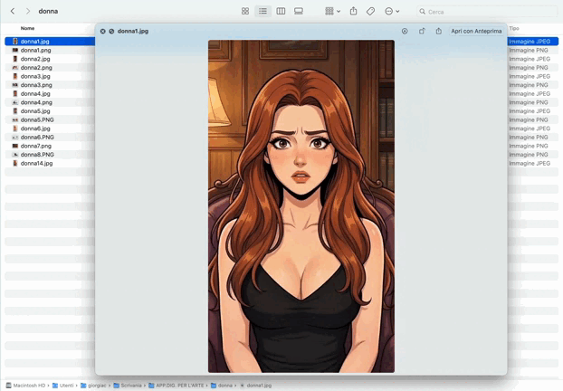
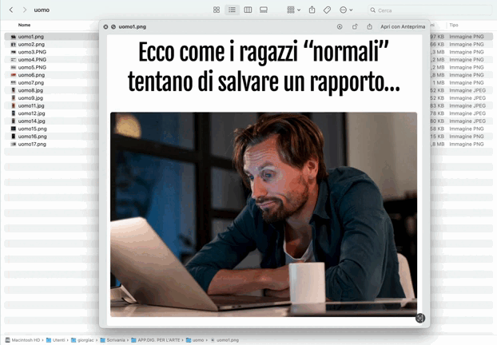
Questo confronto rende evidente uno dei nuclei centrali del progetto:
la donna viene rappresentata come misura; l’uomo viene rappresentato come progetto.
La donna misura il successo dell’uomo, conferma o nega il suo valore, diventa test, premio o ostacolo. L’uomo, invece, viene costruito come soggetto da ottimizzare, migliorare, allenare e rendere competitivo. L’immaginario visivo conferma quindi ciò che emerge dal linguaggio: la relazione viene trasformata in performance, mentre il corpo e il desiderio femminile diventano indicatori del valore maschile.
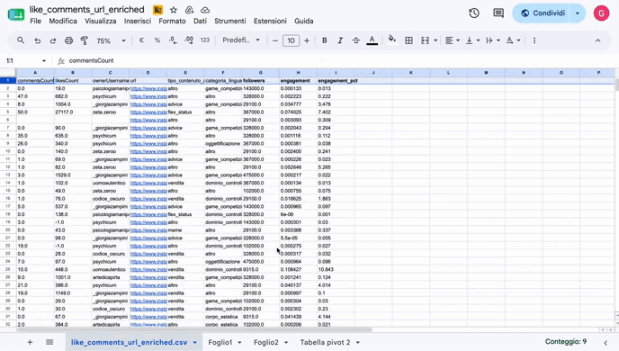
_follower.gif)
Quarta fase: analisi dei reel, trascrizione e limite del counting
La fase successiva si è concentrata sui reel. Dai 30 profili analizzati sono stati selezionati, dove presenti, fino a 10 reel per profilo, scegliendo tra i più recenti e i più visualizzati. Per ogni reel sono stati raccolti URL, views, like, commenti, caption e hashtag. Inoltre, sono stati trascritti gli audio, estratti frame rilevanti e inizialmente è stato effettuato un counting delle parole più ripetute.

Tuttavia, proprio nella fase dei reel, ci siamo accorte che anche il counting risultava parziale ed escludente. Se nei post il conteggio delle parole permetteva di osservare ricorrenze linguistiche generali, nei reel la gravità dei contenuti non emergeva soltanto dalla frequenza delle parole, ma dalla costruzione complessiva delle frasi.
Alcune affermazioni erano problematiche non perché contenevano una keyword ricorrente, ma perché costruivano un immaginario preciso: la donna come essere emotivo, manipolatorio, prevedibile, iperselettivo o naturalmente predisposto a determinati comportamenti; l’uomo come soggetto razionale, strategico, dominante, chiamato ad agire, controllare e performare.
Frasi come:
“Le donne attraenti, le cosiddette belle fighe, non sono delle stronze, hanno semplicemente delle aspettative molto alte.”
“L’uomo è cacciatore-raccoglitore. Localizzi, incroci, attacchi, risolvi. Le donne devono crescere la prole, quindi sono molto più emotive.”
“Ci sono livelli di manipolazione profonda in cui una donna non ti manipola apposta, ma è manipolata dalla sua stessa natura a manipolare.”
mostrano che il problema non è riducibile alla parola singola. Il counting non riusciva a restituire la violenza del tono, la naturalizzazione degli stereotipi o il modo in cui queste frasi agiscono sul pubblico.
Per questo motivo, nella fase finale dell’analisi, abbiamo scelto di adottare la tecnica del mashup. Il mashup consente di non isolare le parole, ma di accostare frasi, slogan, frammenti audio e porzioni di reel provenienti da profili diversi. In questo modo, la ripetizione diventa percepibile non come dato numerico, ma come esperienza.
Il mashup permette di far emergere la natura sistemica del linguaggio analizzato. Non si tratta più del singolo creator o della singola frase, ma di un coro di voci che, pur provenendo da profili differenti, ripete gli stessi concetti: valore, controllo, rispetto, attrazione, successo, disciplina, dominio, riconquista.
Questa scelta metodologica è diventata anche una scelta di restituzione. L’installazione finale non mostra solo i dati raccolti: mette in scena la loro ripetizione, la loro aggressività, la loro capacità di costruire un ambiente mentale e culturale.
Quinta fase: costruzione delle macrotematiche
Dopo l’analisi dei reel e la scelta del mashup, i frammenti selezionati sono stati organizzati in sei macrotematiche. Queste categorie non sono state imposte nella prima fase della ricerca, ma sono emerse progressivamente dall’ascolto, dalla trascrizione e dall’accostamento dei materiali.
Le sei macrotematiche finali sono:
Manipolazione / Riconquista
Successo / Performance
Rispetto / Maschio Alfa
Approccio / Coraggio
Attrazione
Crollo / Supporto
Ogni macrotematica rappresenta una diversa promessa del sistema.
Manipolazione / Riconquista raccoglie contenuti legati al controllo emotivo, al silenzio strategico, alla distanza e alla riconquista.
Successo / Performance raccoglie contenuti in cui il valore maschile viene legato alla disciplina, allo status, al capitale mentale, alla produttività e alla trasformazione personale.
Rispetto / Maschio Alfa raccoglie frasi in cui la relazione viene descritta come gerarchia, test o imposizione di valore.
Approccio / Coraggio raccoglie contenuti in cui il rifiuto viene trasformato in allenamento e l’uomo viene spinto ad agire, rischiare, approcciare.
Attrazione raccoglie frasi che rappresentano il desiderio come competizione, gerarchia e selezione.
Crollo / Supporto raccoglie contenuti che trasformano dolore, solitudine, fallimento e fragilità in retorica della forza e del miglioramento.
Queste macrotematiche diventano la struttura dell’installazione finale: ogni telefono rappresenta una voce, una categoria, una narrazione.
Concept dell’installazione
La restituzione finale di The Alpha Factory non è una semplice visualizzazione grafica del dataset, ma una traduzione spaziale, sonora e materiale del processo di ricerca.
L’installazione mette in scena la manosfera come ecosistema chiuso, ripetitivo e autoreferenziale. I Pick-Up Artists analizzati non sono presentati come figure isolate, ma come soggetti che agiscono all’interno di una rete più ampia, in cui contenuti diversi finiscono per riprodurre gli stessi stereotipi, le stesse tecniche di controllo e gli stessi modelli di desiderabilità.
Nelle slide del progetto, la manosfera viene descritta come un insieme di comunità e movimenti accomunati dalla convinzione che la società sia discriminatoria nei confronti degli uomini. Questo contesto produce un atteggiamento profondamente misogino, amplificato da dinamiche quasi settarie e autoreferenziali, in cui la relazione viene trasformata in performance e la donna in oggetto di valutazione.
Per questo motivo, la disposizione finale dei telefoni è circolare. Il cerchio richiama una riunione chiusa, un rituale, una setta, un gruppo che si rafforza attraverso la ripetizione delle stesse formule. I telefoni non sono semplicemente supporti video: sono voci che circondano il pubblico. Entrare nell’installazione significa entrare fisicamente dentro un sistema discorsivo.
Struttura spaziale dell’installazione
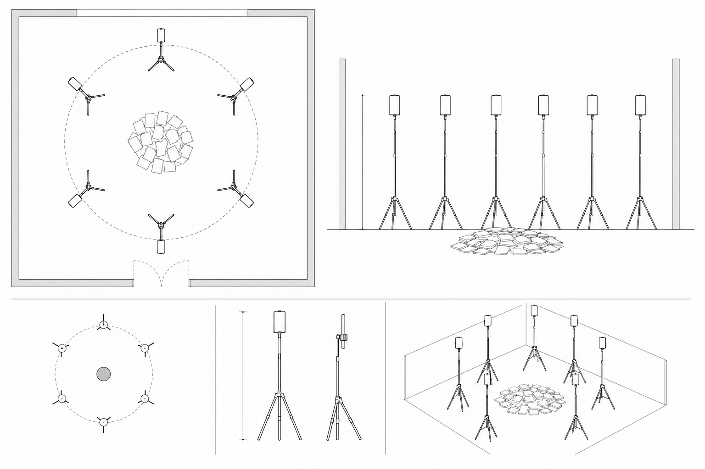
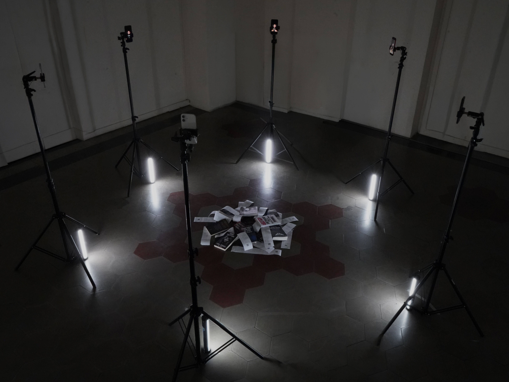
L’installazione è composta da sei telefoni disposti in cerchio. Ogni telefono riproduce un video verticale in loop, costruito attraverso la tecnica del mashup. I video combinano frasi, slogan, frammenti audio, sottotitoli, parole ricorrenti e materiali visivi ispirati ai reel analizzati.
Telefono 1 — Manipolazione / Riconquista
Frasi legate al controllo emotivo, alla distanza, al silenzio strategico e alla riconquista.
Telefono 2 — Successo / Performance
Frasi legate alla disciplina, allo status, al valore personale e alla costruzione dell’uomo vincente.
Telefono 3 — Rispetto / Maschio Alfa
Frasi legate al dominio, al rispetto imposto, al controllo e alla gerarchia uomo-donna.
Telefono 4 — Approccio / Coraggio
Frasi legate all’azione, al rischio, al rifiuto e alla necessità di performare sicurezza.
Telefono 5 — Attrazione
Frasi legate alla selezione, alla competizione, alla desiderabilità e alla gerarchia del valore.
Telefono 6 — Crollo / Supporto
Frasi legate alla sofferenza, alla solitudine, alla fragilità e alla trasformazione del dolore in forza.
I sei telefoni funzionano come sei canali di una stessa macchina. Ogni dispositivo sembra parlare di un tema diverso, ma tutti insieme costruiscono lo stesso messaggio: l’uomo deve migliorarsi, controllarsi e dominare; la donna deve essere letta, conquistata, misurata o superata.
Il centro dell’installazione: libri, scontrini, prezzi e QR code
Al centro del cerchio si trova il nucleo materiale dell’esposizione. Qui vengono collocati i libri trovati durante l’analisi dei siti, insieme a scontrini, prezzi, descrizioni, call to action e QR code.
Questa parte centrale rende evidente l’aspetto commerciale dell’ecosistema. Quello che nei reel appare come consiglio, supporto o motivazione personale si rivela parte di un mercato strutturato. Il disagio relazionale viene trasformato in prodotto. La paura del rifiuto diventa corso. La sofferenza diventa consulenza. La relazione diventa funnel.
I libri raccolti dai siti diventano oggetti fisici all’interno dell’installazione. I loro titoli rendono visibile la radicalità del linguaggio usato da questi ecosistemi. Alcuni esempi:
“Come farla pentire di averti cambiato”
“Liberati da lei: come spezzare la dipendenza emotiva e riconquistare te stesso”
“Le 16 leggi per entrare nella testa di una donna”
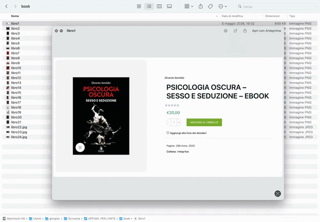
Accanto ai libri vengono posizionati degli scontrini. Gli scontrini funzionano come ricevute simboliche del mercato della seduzione. Riportano prezzi, descrizioni, promesse commerciali e call to action dei corsi e delle consulenze vendute. Ogni scontrino può includere un QR code che rimanda al sito o alla fonte analizzata.
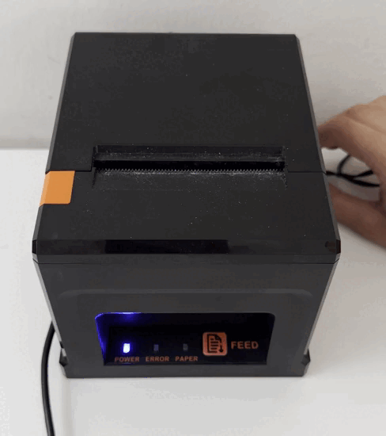
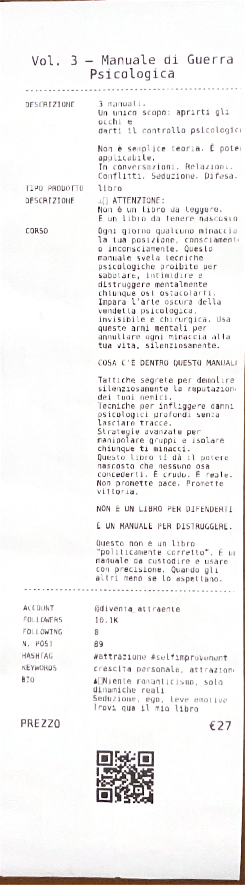
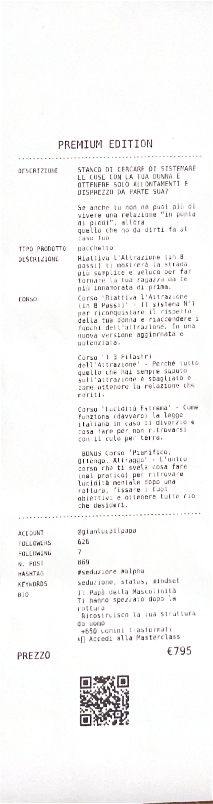
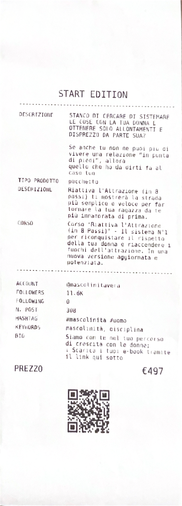
Il centro dell’esposizione è illuminato. La luce invita il pubblico a entrare nel cerchio e ad avvicinarsi agli oggetti. Questa scelta crea un’ambiguità: la luce attira, ma una volta entrato, l’utente si trova circondato dai telefoni e dalle voci del mashup. Lo spazio riproduce così il funzionamento del funnel osservato online: il contenuto cattura, la promessa seduce, il prodotto monetizza.


Scelte creative e significato
La scelta dello smartphone come dispositivo principale deriva dal contesto originario della ricerca. I contenuti analizzati nascono e circolano principalmente su schermi verticali, dentro feed rapidi, ripetitivi e personalizzati. Usare telefoni reali significa mantenere il formato quotidiano del fenomeno, ma spostarlo in uno spazio fisico, dove la ripetizione diventa più evidente e più disturbante.
La disposizione circolare trasforma i telefoni in un coro. Ogni voce ripete una parte dell’ideologia, ma l’effetto complessivo è quello di un sistema chiuso, quasi settario. Il pubblico non guarda un singolo contenuto, ma viene immerso in una rete di messaggi che si confermano a vicenda.
Il mashup è una scelta fondamentale perché restituisce ciò che il counting non riusciva a mostrare: il tono, l’insistenza, la violenza implicita, la continuità tra profili diversi. Non si tratta più di leggere una parola frequente, ma di ascoltare una macchina linguistica che produce continuamente la stessa idea di uomo e di donna.
Il centro con libri e scontrini aggiunge un ulteriore livello: mostra che questa macchina discorsiva è anche una macchina economica. La misoginia, la paura, l’insicurezza e il desiderio di controllo diventano prodotti vendibili.
Montaggio dell’installazione


L’installazione lavora quindi su tre livelli:
Linguaggio — i telefoni restituiscono frasi, slogan e mashup di reel.
Immaginario — le immagini raccolte mostrano la donna come stereotipo e l’uomo come figura eroicizzata.
Mercato — libri, scontrini, prezzi, call to action e QR code mostrano la monetizzazione della seduzione.
The Alpha Factory non visualizza solo un dataset: mette in scena una macchina discorsiva e commerciale in cui l’uomo viene prodotto come progetto di ottimizzazione, la donna viene misurata come conferma del suo valore, e la relazione diventa un mercato.
Studenti-autori
Martina Procopio
Giorgia Ciocca
Anisia Petruccelli
Docenti
Antonella Autori
Enrico Isidori
Corso
Data Visualization
DASL Communication and Creative Technologies
IED Torino
A.A. 2025/2026
In recent years, social media have become one of the main spaces where models of masculinity are constructed and circulated. Within the manosphere, a broad network of online anti-feminist and male-supremacist communities, Pick-Up Artists, also known as the “seduction community”, represent a central subculture. They focus on teaching techniques to seduce and control women, while creators promise to teach men how to achieve success, respect, attraction and personal confidence through strategies, techniques and self-improvement paths.
The research behind the project analyzed 30 profiles belonging to this ecosystem, examining their websites, courses, consulting services and social media content. For each profile, reels, transcripts, calls to action, linguistic patterns, commercialized products and monetization strategies were collected and studied in order to identify the recurring narratives running through these contents.
The analysis revealed an extremely repetitive language built around concepts such as value, status, control, attraction and performance. In this system, masculinity is presented as a process of continuous optimization, while women are frequently represented as indicators of success, goals to be achieved or confirmations of male value.
The installation translates these findings through six smartphones, each embodying one of the main narratives that emerged from the research: manipulation, success, respect, approach, attraction and resilience. By bringing together voices, slogans and fragments of reels in the same space, The Alpha Factory transforms the feed into a physical environment, making visible the process through which desires, relationships and identities are standardized, reproduced and ultimately transformed into a market.
Definition of the research object and scope
The object of analysis of the project is the social ecosystem of Pick-Up Artists, also identified as dating coaches or creators linked to the “seduction community”. The research focuses on profiles that produce content mainly aimed at a male audience, promising attraction techniques, relational strategies, personal improvement paths, consultations and courses to achieve success with women.
The project starts from a critical question: can Pick-Up Artists be considered an intermediate node in a broader systemic problem concerning the objectification of women, transmitted and amplified through social digital platforms? In the project slides, this issue is connected to the standardization of bodies and behaviors, the reduction of identity to optimizable variables, and the construction of relationships as competition and performance.
The investigation does not assume the existence of objectification a priori, but attempts to verify it empirically through the analysis of language, images, products sold, calls to action and recurring narratives. In this sense, the project does not simply observe individual problematic contents, but tries to reconstruct the system that produces, repeats and monetizes them.
The scope of the investigation was defined as follows:
Main platform observed: Instagram
Geographical area: Italy
Observation period: content published or active in the last 12 months, 2025–2026
Unit of analysis: Instagram accounts with at least 500 followers, attributable to coaches, creators, dating coaches or Pick-Up Artists
Objects analyzed: public posts, reels, captions, bios, hashtags, external links, websites, courses, consultations, digital products, calls to action, promotional images.
Private profiles, publicly inaccessible content, direct messages, private conversations, comments from users not relevant to the research, and content not attributable to the dating coach / seduction ecosystem were excluded.
First phase: manual mapping of Instagram accounts
The first phase of the work consisted of manually searching for and selecting Instagram profiles. The accounts were identified through recurring keywords within the analyzed ecosystem, including:
attraction, alpha male, seduction, masculinity, picking up.
Through these keywords, 30 Instagram accounts were collected and then organized in a spreadsheet. For each profile, the following were recorded: profile name, number of followers, following, number of posts, presence of a website or external link, recurring hashtags, courses, keywords and bio.
This phase made it possible to observe an initial recurring structure. The bios do not appear as simple personal descriptions, but as small conversion devices. They are built to address a precise target, mainly men, and promise a transformation: becoming more confident, more desirable, more masculine, more respected or more effective in seduction.
In short, the bios function as micro landing pages. They capture attention, create a need and immediately push toward an action: clicking a link, booking a call, accessing a course or entering a community.
Materials to be included in the documentation
Second phase: collecting Instagram posts with Apify
After mapping the profiles, 10 Instagram posts were analyzed for each of the 30 accounts through the Apify platform, resulting in a total of 300 collected posts. For each post, data such as captions, hashtags, likes, comments, engagement, content type and most frequently used words were extracted.
This phase aimed to systematize the recurring language in static content and public posts. Initially, we tried to categorize the language by assigning content to interpretive categories such as performance, value, dominance, competition, control, attraction and success.
However, this first methodology revealed an important limitation. A large amount of content ended up in the “Other” category. At first, this category seemed to simply collect what did not fit into the main labels, but its growing relevance made us understand that the problem was not the dataset: it was the method.
The “Other” category revealed that the language of Pick-Up Artists could not be compressed into predefined categories. Many sentences were ambiguous, hybrid, contradictory or problematic not because of a single word, but because of the tone, the context and the way they constructed a certain idea of masculinity and relationships. Continuing to categorize rigidly would have meant excluding precisely the nuances that made the material more interesting and critical.
For this reason, we chose to abandon a classification that was too closed and move to a less excluding methodology: word counting. Instead of deciding in advance which categories to look for, we observed which words emerged most frequently from the collected content.
The counting made it possible to identify recurring words and concepts such as value, respect, control, attraction, success, status, discipline, performance and competition. These terms confirmed the presence of a repetitive language oriented toward the construction of the relationship as strategy and performance.
Materials to be included in the documentation
Third phase: analysis of websites, courses and consultations
In parallel with the analysis of Instagram content, the external links present in the profiles were observed. Each profile, where available, links to websites, landing pages, courses, consultations, communities, introductory calls or digital products.
The websites were analyzed manually and organized in tables. For each website, the following were collected:
URL, website description, call to action, course title, subtitle, description, cover image, product type, price transparency, price, presence of an introductory call and promotional images.
This phase made it possible to understand how much the Pick-Up Artist ecosystem is structured as a market. Social content is not isolated, but functions as the entry point into a commercial system. The reel or post captures attention, the bio promises transformation, the link leads to a landing page and the landing page leads to a product: a course, consultation, manual, video course, community or introductory call.
The website analysis made it clear that these creators monetize not only the internalized misogyny of some men, but also their insecurity, loneliness, fear of rejection and low self-esteem. The relational problem is transformed into an individual need, and the individual need is converted into a sellable product.
Visual comparison: how women and men are represented
During the analysis of websites, covers, landing pages and reels, not only texts, prices and calls to action were collected, but also images. This collection made it possible to observe a second level of the phenomenon: not only what is said, but how women and men are visually represented.
The comparison between the collected images shows a strong asymmetry.
Women are often represented in a stereotyped, sexualized way, or reduced to desirable figures. They appear as prizes, temptations, problems, bodies to be conquered, decorative presences or confirmations of male success. They are rarely represented as autonomous subjects: more often they are the target of a strategy, the object of a transformation or the external proof of a man’s value.
Men, on the other hand, are represented through aspirational and heroic visual codes. In the websites and promotional content, recurring images present the man as a strong, disciplined, dominant, solitary, superior and performing figure. In some cases, the representation almost takes on the tone of a superhero: the man is the one who must get back up, evolve, control himself, win, become rare, transform into an enhanced version of himself.
This comparison makes one of the core points of the project clear:
the woman is represented as a measure; the man is represented as a project.
The woman measures the man’s success, confirms or denies his value, becomes a test, prize or obstacle. The man, instead, is constructed as a subject to be optimized, improved, trained and made competitive. The visual imagery therefore confirms what emerges from the language: the relationship is transformed into performance, while the female body and desire become indicators of male value.
Materials to be included in the documentation
Fourth phase: reel analysis, transcription and the limits of counting
The next phase focused on reels. From the 30 analyzed profiles, up to 10 reels per profile were selected, where available, choosing among the most recent and most viewed. For each reel, URLs, views, likes, comments, captions and hashtags were collected. The audio was also transcribed, relevant frames were extracted and, initially, a count of the most repeated words was carried out.
However, precisely during the reel phase, we realized that counting was also partial and excluding. While in posts word counting made it possible to observe general linguistic recurrences, in reels the gravity of the content did not emerge only from word frequency, but from the overall construction of the sentences.
Some statements were problematic not because they contained a recurring keyword, but because they constructed a specific imaginary: women as emotional, manipulative, predictable, hyper-selective or naturally predisposed to certain behaviors; men as rational, strategic, dominant subjects called to act, control and perform.
Sentences such as:
“Attractive women, the so-called hot girls, are not bitches; they simply have very high expectations.”
“The man is a hunter-gatherer. You locate, intersect, attack, solve. Women have to raise the offspring, so they are much more emotional.”
“There are levels of deep manipulation in which a woman does not manipulate you on purpose, but is manipulated by her own nature into manipulating.”
show that the problem cannot be reduced to a single word. Counting could not return the violence of the tone, the naturalization of stereotypes or the way these sentences act on the audience.
For this reason, in the final phase of the analysis, we chose to adopt the mashup technique. The mashup makes it possible not to isolate words, but to place sentences, slogans, audio fragments and portions of reels from different profiles side by side. In this way, repetition becomes perceptible not as a numerical datum, but as an experience.
The mashup makes the systemic nature of the analyzed language emerge. It is no longer about the individual creator or the individual sentence, but about a chorus of voices that, although coming from different profiles, repeat the same concepts: value, control, respect, attraction, success, discipline, dominance, reconquest.
This methodological choice also became a choice of restitution. The final installation does not only show the collected data: it stages their repetition, their aggressiveness and their capacity to build a mental and cultural environment.
Materials to be included in the documentation
Fifth phase: construction of the macro-themes
After the reel analysis and the choice of the mashup, the selected fragments were organized into six macro-themes. These categories were not imposed in the first phase of the research, but emerged progressively through listening, transcription and the juxtaposition of the materials.
The six final macro-themes are:
Manipulation / Reconquest
Success / Performance
Respect / Alpha Male
Approach / Courage
Attraction
Collapse / Support
Each macro-theme represents a different promise of the system.
Manipulation / Reconquest gathers content related to emotional control, strategic silence, distance and reconquest.
Success / Performance gathers content in which male value is linked to discipline, status, mental capital, productivity and personal transformation.
Respect / Alpha Male gathers sentences in which the relationship is described as hierarchy, test or imposition of value.
Approach / Courage gathers content in which rejection is transformed into training and the man is pushed to act, risk and approach.
Attraction gathers sentences that represent desire as competition, hierarchy and selection.
Collapse / Support gathers content that transforms pain, loneliness, failure and fragility into a rhetoric of strength and self-improvement.
These macro-themes become the structure of the final installation: each phone represents a voice, a category, a narrative.
Installation concept
The final restitution of The Alpha Factory is not a simple graphic visualization of the dataset, but a spatial, sonic and material translation of the research process.
The installation stages the manosphere as a closed, repetitive and self-referential ecosystem. The analyzed Pick-Up Artists are not presented as isolated figures, but as subjects acting within a broader network, where different contents end up reproducing the same stereotypes, the same techniques of control and the same models of desirability.
In the project slides, the manosphere is described as a set of communities and movements united by the belief that society discriminates against men. This context produces a deeply misogynistic attitude, amplified by almost sect-like and self-referential dynamics, in which the relationship is transformed into performance and the woman into an object of evaluation.
For this reason, the final arrangement of the phones is circular. The circle recalls a closed meeting, a ritual, a sect, a group that reinforces itself through the repetition of the same formulas. The phones are not simply video supports: they are voices that surround the audience. Entering the installation means physically entering a discursive system.
Spatial structure of the installation
The installation is composed of six phones arranged in a circle. Each phone plays a vertical video in loop, built through the mashup technique. The videos combine sentences, slogans, audio fragments, subtitles, recurring words and visual materials inspired by the analyzed reels.
Each phone corresponds to a macro-theme:
Phone 1 — Manipulation / Reconquest
Sentences linked to emotional control, distance, strategic silence and reconquest.
Phone 2 — Success / Performance
Sentences linked to discipline, status, personal value and the construction of the winning man.
Phone 3 — Respect / Alpha Male
Sentences linked to dominance, imposed respect, control and hierarchy.
Phone 4 — Approach / Courage
Sentences linked to action, risk, rejection and the need to perform confidence.
Phone 5 — Attraction
Sentences linked to selection, competition, desirability and the hierarchy of value.
Phone 6 — Collapse / Support
Sentences linked to suffering, loneliness, fragility and the transformation of pain into strength.
The six phones function as six channels of the same machine. Each device seems to speak about a different theme, but together they build the same message: the man must improve himself, control himself and dominate; the woman must be read, conquered, measured or overcome.
The center of the installation: books, receipts, prices and QR codes
At the center of the circle is the material core of the exhibition. Here, the books found during the website analysis are placed together with receipts, prices, descriptions, calls to action and QR codes.
This central part makes the commercial aspect of the ecosystem visible. What appears in reels as advice, support or personal motivation reveals itself as part of a structured market. Relational distress is transformed into a product. Fear of rejection becomes a course. Suffering becomes consultation. The relationship becomes a funnel.
The books collected from the websites become physical objects within the installation. Their titles make visible the radicality of the language used by these ecosystems. Some examples:
“How to make her regret replacing you”
“Free yourself from her: how to break emotional dependency and reclaim yourself”
“The 16 laws to get inside a woman’s head”
Receipts are placed next to the books. The receipts function as symbolic proof of the seduction market. They report prices, descriptions, commercial promises and calls to action for the courses and consultations sold. Each receipt can include a QR code linking to the analyzed website or source.
The center of the exhibition is illuminated. The light invites the audience to enter the circle and approach the objects. This choice creates an ambiguity: the light attracts, but once inside, the user is surrounded by the phones and the voices of the mashup. The space thus reproduces the functioning of the funnel observed online: the content captures, the promise seduces, the product monetizes.
Creative choices and meaning
The choice of the smartphone as the main device comes from the original context of the research. The analyzed contents are born and circulate mainly on vertical screens, inside fast, repetitive and personalized feeds. Using real phones means preserving the everyday format of the phenomenon, but moving it into a physical space, where repetition becomes more evident and more disturbing.
The circular arrangement transforms the phones into a chorus. Each voice repeats one part of the ideology, but the overall effect is that of a closed, almost sect-like system. The audience does not watch a single piece of content, but is immersed in a network of messages that confirm one another.
The mashup is a fundamental choice because it returns what counting could not show: tone, insistence, implicit violence, and continuity across different profiles. It is no longer a matter of reading a frequent word, but of listening to a linguistic machine that continuously produces the same idea of man and woman.
The center with books and receipts adds another layer: it shows that this discursive machine is also an economic machine. Misogyny, fear, insecurity and the desire for control become sellable products.
Installation Montage
The installation therefore works on three levels:
Language — the phones return sentences, slogans and reel mashups.
Imagery — the collected images show the woman as a stereotype and the man as a heroic figure.
Market — books, receipts, prices, calls to action and QR codes show the monetization of seduction.
The Alpha Factory does not simply visualize a dataset: it stages a discursive and commercial machine in which men are produced as projects of optimization, women are measured as confirmations of their value, and relationships become a market.
Student-authors
Martina Procopio
Giorgia Ciocca
Anisia Petruccelli
Lecturers
Antonella Autori
Enrico Isidori
Course
Data Visualization
DASL Communication and Creative Technologies
IED Torino
A.Y. 2025/2026